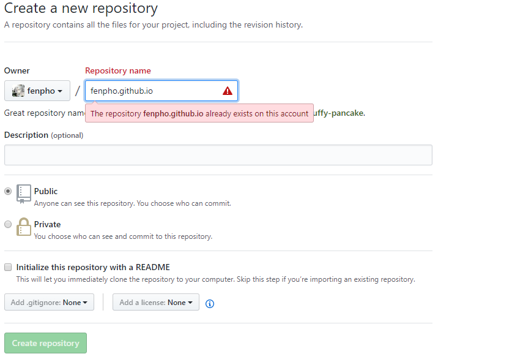
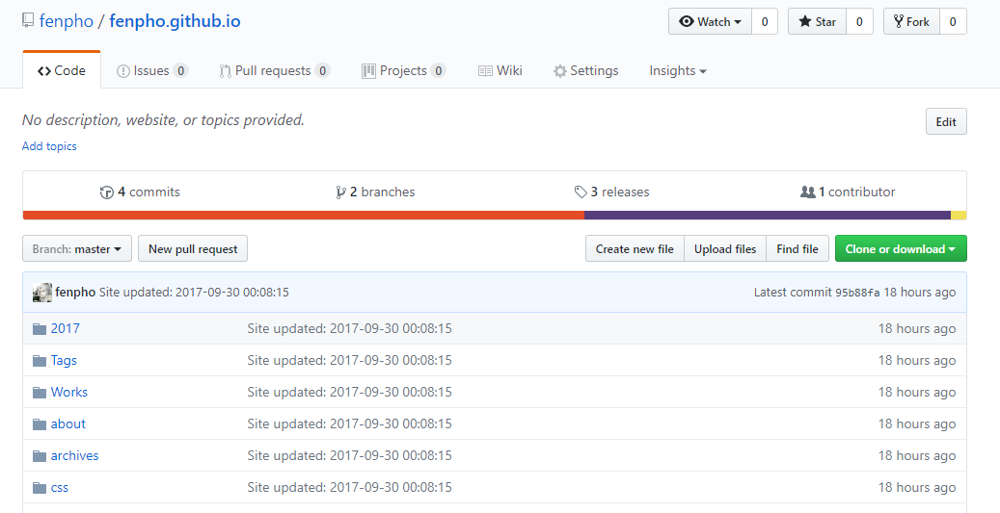
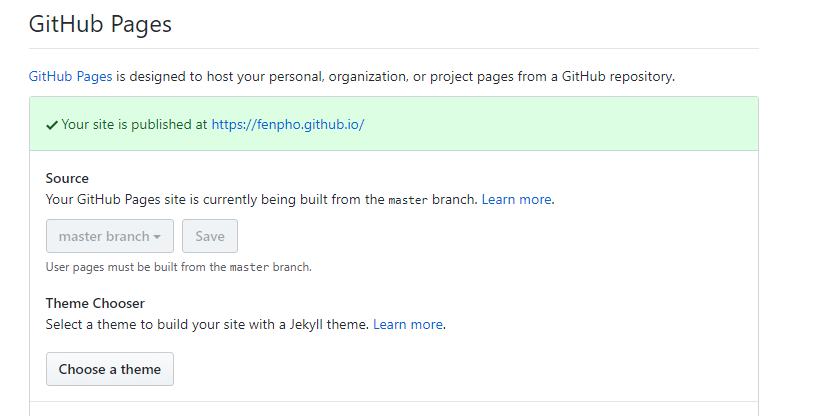
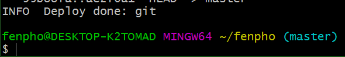

Hexo 是一个快速、简洁且高效的博客框架。Hexo 使用 Markdown（或其他渲染引擎）解析文章，在几秒内，即可利用靓丽的主题生成静态网页。
Mac 用户您在编译时可能会遇到问题，请先到 App Store 安装 Xcode，Xcode 完成后，启动并进入 Preferences -> Download -> Command Line Tools -> Install 安装命令行工具。
安装 Git
Windows：下载并安装 git.
Mac：使用 Homebrew, MacPorts ：brew install git 或下载 安装程序 安装。
Linux (Ubuntu, Debian)：sudo apt-get install git-core
Linux (Fedora, Red Hat, CentOS)：sudo yum install git-core
Windows 用户由于众所周知的原因，从上面的链接下载git for windows最好挂上一个代理，否则下载速度十分缓慢。也可以参考这个页面，收录了存储于百度云的下载地址。
安装 Node.js 的最佳方式是使用 nvm。
cURL:$ curl https://raw.github.com/creationix/nvm/master/install.sh | sh
Wget:$ wget -qO- https://raw.github.com/creationix/nvm/master/install.sh | sh
安装完成后，重启终端并执行下列命令即可安装 Node.js。$ nvm install stable
或者您也可以下载 安装程序 来安装。
Windows 用户
对于windows用户来说，建议使用安装程序进行安装。安装时，请勾选Add to PATH选项。另外，您也可以使用Git Bash，这是git for windows自带的一组程序，提供了Linux风格的shell，在该环境下，您可以直接用上面提到的命令来安装Node.js。打开它的方法很简单，在任意位置单击右键，选择“Git Bash Here”即可。由于Hexo的很多操作都涉及到命令行，您可以考虑始终使用Git Bash来进行操作。
执行以下命令：$ npm install -g hexo-cli
安装 Hexo 完成后，请执行下列命令，Hexo 将会在指定文件夹中新建所需要的文件。123$ hexo init <folder>$ cd <folder>$ npm install
新建完成后，指定文件夹的目录如下：
├── _config.yml
├── package.json
├── scaffolds
├── source
| ├── _drafts
| └── _posts
└── themes
接下来要做的就是修改配置文件了，在根目录下找到文件：_config.yml
安装自己的需要进行修改，一般修改下网站标题，作者就可以了12345678910111213# Sitetitle: Fenpho //网站标题subtitle: //网站副标题description://网站描述author: fenpho//网站作者language: zh-CN//语言timezone://时区# URLand root as '/child/'url: https://fenpho.github.io/ //网站链接root: / //网站根目录permalink: :year/:month/:day/:title/ //时间格式
具体的修改方法可以参考官网：Hexo
$ hexo generate //也可以使用缩写 : $ hexo g$ hexo server$ git clone https://github.com/SuperKieran/TKL.git themes/tkl更新主题相关文件
|
|
使用主题
修改根目录下的博客配置文件 _config.yml 主题属性 theme 为 cafe.
好了，主题安装好了，此时需要使用如下命令：12hexo clean && hexo ghexo server
完成后刷新页面看一下吧
创建一条博文，运行下面的命令，或者直接新建一个Markdown文件，非命令行新建文件需要手动添加文章头部（注意目录source/_posts）
hexo new "your-post-name"
如果想要在新建的同时生成对应的文件夹，用于存放文档的资源文件，如图片，音视频等：将配置文件中的post_asset_folder的值从false改为true即可post_asset_folder: true
在根目录下scaffolds/post.md中，添加一行categories:（同理可应用在page.md和photo.md）
|
|
在文章的开头配置
|
|
第三步：配置博客首页归档展示样式。修改主题的配置文件themes目录下对应的主题下面的_config.yml中:
|
|
原理：在Hexo生成首页HTML时，将top值高的文章排在前面，达到置顶功能。修改Hexo文件夹下的node_modules/hexo-generator-index/lib/generator.js，在生成文章之前进行文章top值排序。
需添加的代码：1234567891011121314posts.data = posts.data.sort(function(a, b) {if(a.top && b.top) { // 两篇文章top都有定义 if(a.top == b.top) return b.date - a.date; // 若top值一样则按照文章日期降序排 else return b.top - a.top; // 否则按照top值降序排}else if(a.top && !b.top) { // 以下是只有一篇文章top有定义，那么将有top的排在前面 return -1;}else if(!a.top && b.top) { return 1;}else return b.date - a.date; // 都没定义按照文章日期降序排});
其中涉及Javascript的比较函数：123cmp(var a, var b) {return a - b; // 升序，降序的话就 b - a}
修改完成后，只需要在需要置顶的文章上面加上top值，将会根据top值大小来选择置顶顺序top值越大越靠前。需要注意的是，这个文件不是主题的一部分，也不是Git管理的，备份的时候比较容易忽略。
以下是最终的generator.js12345678910111213141516171819202122232425262728'use strict';var pagination = require('hexo-pagination');module.exports = function(locals){ var config = this.config; var posts = locals.posts; posts.data = posts.data.sort(function(a, b) { if(a.top && b.top) { if(a.top == b.top) return b.date - a.date; else return b.top - a.top; } else if(a.top && !b.top) { return -1; } else if(!a.top && b.top) { return 1; } else return b.date - a.date; }); var paginationDir = config.pagination_dir || 'page'; return pagination('', posts, { perPage: config.index_generator.per_page, layout: ['index', 'archive'], format: paginationDir + '/%d/', data: { __index: true } });};
新建一个 Repository
在 Repository name 下填写 yourname.github.io,Description (optional) 下填写一些简单的描述（不写也没有关系），如图所示：

创建成功之后，进入仓库的设置（点击setting）界面如下图所示：

找到pages选项，选择master branch作为主页

简单两步 yourname.github.io 这个域名就配置成功了。
npm install hexo-deployer-git --save修改你的 _config.yml 配置文件，在结尾处加上如下内容：123456# Deployment## Docs: https://hexo.io/docs/deployment.htmldeploy: type: git repo: git@github.com:fenpho/fenpho.github.io.git branch: master
注意repo中的地址为你自己新建的仓库的路径
hexo g & d最后出现如下提示就代表成功啦！
INFO Deploy done: git

the end！